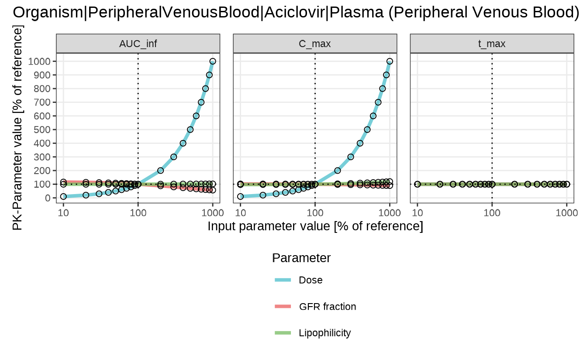
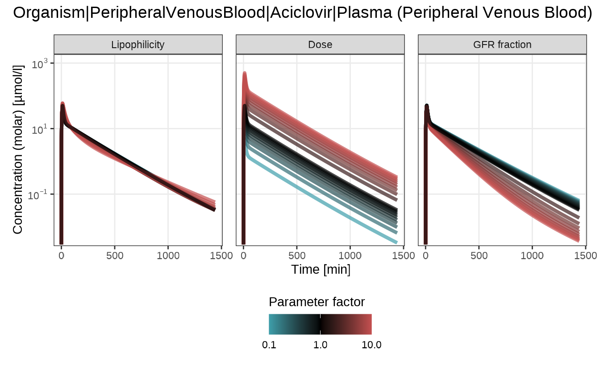

library(esqlabsR)
#> Loading required package: ospsuite
#> Loading required package: rClr
#> Loading the dynamic library for Microsoft .NET runtime...
#> Loaded Common Language Runtime version 4.0.30319.42000
#> Warning: replacing previous import 'ospsuite::getSteadyState' by
#> 'ospsuite.parameteridentification::getSteadyState' when loading 'esqlabsR'
#>
#> Attaching package: 'esqlabsR'
#> The following object is masked from 'package:ospsuite':
#>
#> exportSteadyStateToXLSWorkflow
Sensitivity analysis quantifies how the pharmacokinetics of the drug changes with a variation of simulation parameters. This is important to track if the values of simulation parameters are uncertain. Further information about sensitivity analysis and the mathematical background is provided in the OSPS documentation section Sensitivity Analysis.
In the aciclovir simulation example, the lipophilicity of aciclovir was assumed to be -0.097 in log units. In the sensitivity analysis, we want to quantify how much the pharmacokinetic parameters change if the lipophilicity of aciclovir is varied by certain factors.
The sensitivityCalculation() function in the
esqlabsR package does that by re-running the simulation
with a set of updated parameter values. By default, the specified
parameter will be multiplied by 0.1, 0.2, 0.3, …, 1, 2, 3, … and 10, and
for each value a simulation will be run. These factors can be customized
by the variationRange argument. The function returns a list
with output paths for which the sensitivity has been calculated, paths
of parameters that have been varied, a SimulationResults
object, and a data frame with calculated PK parameters for each of the
input parameter values.
simulation <- simulatedScenarios$TestScenario$simulation
OutputPaths <- enum(list(
Aciclovir_PVB = "Organism|PeripheralVenousBlood|Aciclovir|Plasma (Peripheral Venous Blood)"
))
analysis <- sensitivityCalculation(simulation, OutputPaths, parameterPaths = "Aciclovir|Lipophilicity")
head(analysis$pkData)
#> # A tibble: 6 × 9
#> OutputPath ParameterPath ParameterFactor ParameterValue PKParameter
#> <chr> <chr> <dbl> <dbl> <chr>
#> 1 Organism|PeripheralV… Aciclovir|Li… 0.1 -0.0097 AUC_inf
#> 2 Organism|PeripheralV… Aciclovir|Li… 0.2 -0.0194 AUC_inf
#> 3 Organism|PeripheralV… Aciclovir|Li… 0.3 -0.0291 AUC_inf
#> 4 Organism|PeripheralV… Aciclovir|Li… 0.4 -0.0388 AUC_inf
#> 5 Organism|PeripheralV… Aciclovir|Li… 0.5 -0.0485 AUC_inf
#> 6 Organism|PeripheralV… Aciclovir|Li… 0.6 -0.0582 AUC_inf
#> # ℹ 4 more variables: PKParameterValue <dbl>, Unit <chr>,
#> # PercentChangePK <dbl>, SensitivityPKParameter <dbl>In the aciclovir example case, the default value of lipophilicity is -0.097 log units, corresponding to the area under the curve (AUC) of 3915.87 µmol×min/L. Increasing the lipophilicity to -0.0097 log units leads to a decrease of AUC to 3895.43 µmol×min/L (a change of -0.52%), while decreasing the lipophilicity to -0.97 log units leads to an increase of AUC to 4015.73 µmol×min/L (a change of 2.55%). The sensitivity of AUC to 10-fold increase of lipophilicity is calculated as \[\frac{\Delta AUC}{\Delta lipophilicity} \times \frac{lipophilicity}{AUC}=\frac{4015.73-3915.87}{-0.97--0.097} \times \frac{-0.97}{4015.73}=0.027\]
The results of the sensitivity analysis can be plotted with two functions:
- the
sensitivitySpiderPlot()function generate a separate plot for each of the PK parameters under investigation. By default, thesensitivityCalculation()function computes the changes in area under the curve (AUC_inf), maximum concentration (C_max), and time when the maximum concentration is reached (t_max).
sensitivitySpiderPlot(analysis)
#> [1] "Creating plot for path: Organism|PeripheralVenousBlood|Aciclovir|Plasma (Peripheral Venous Blood)"
- the
sensitivityTimeProfiles()function plots the concentration profile for each of the input parameter values:
sensitivityTimeProfiles(analysis)
#> [1] "Creating plot for path: Organism|PeripheralVenousBlood|Aciclovir|Plasma (Peripheral Venous Blood)"